你答完协调者的提问以后，对话里会在蓝色的 Answered 卡下面留一条灰色小胶囊：「→ Sent to the coordinator · 时间 ›」。下面试了三种卡片画法，每种都和蓝色提问卡分得开。所有图都是真实页面截图：「今天」是现在的 web，「方案」是同一份 web 打上原型补丁（prototype.patch）。数据是样例，时间按 UTC。
建议 方案 A：在右侧画一张绿色的「送达卡」，和异常事项卡、任务开工卡是同一类卡。
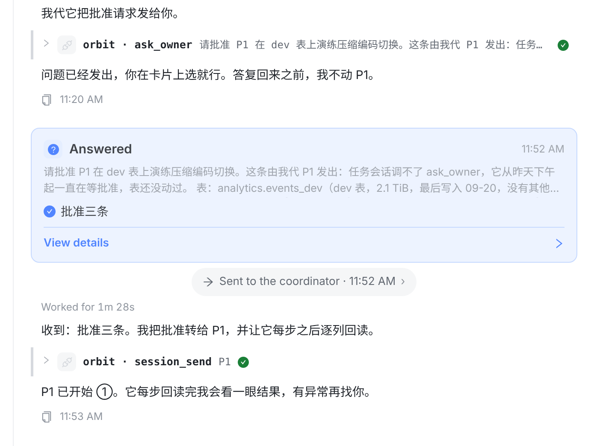
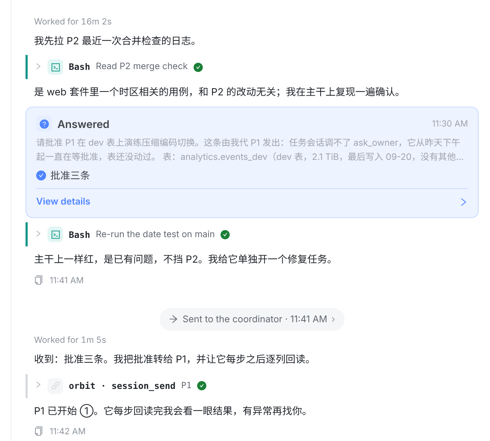
和异常事项卡、任务开工卡、会话消息卡用同一套外形：靠右，最宽 560px，标题行加底部折叠，颜色换成绿色。蓝色提问卡在左边全宽，绿色送达卡在右边，位置和颜色都不同。
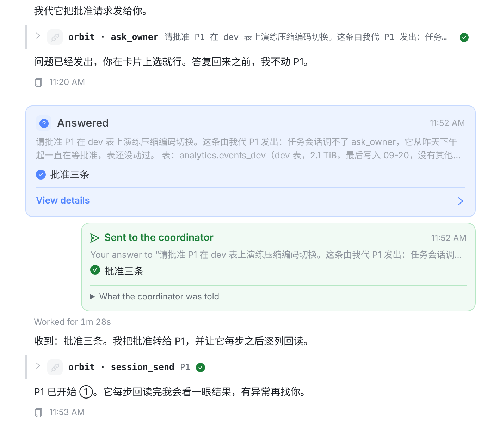
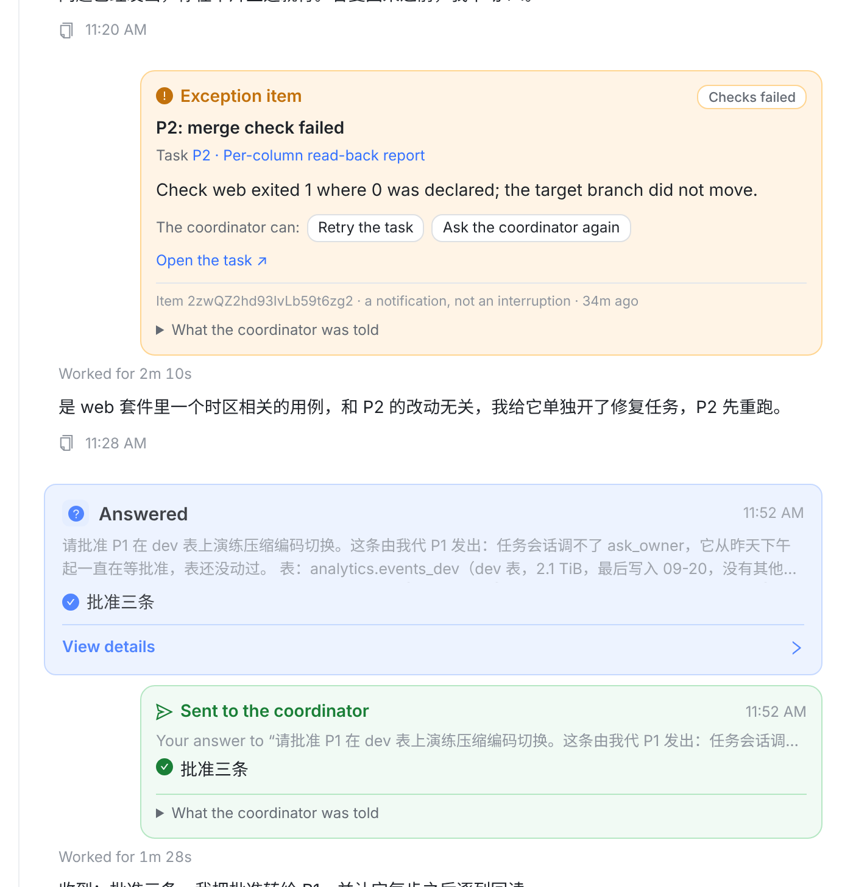
--success-bg / --success-border，深色主题自动跟着变（见下面「③ 其它状态」）。没有造新外观，形状照抄 .oic / .tsc。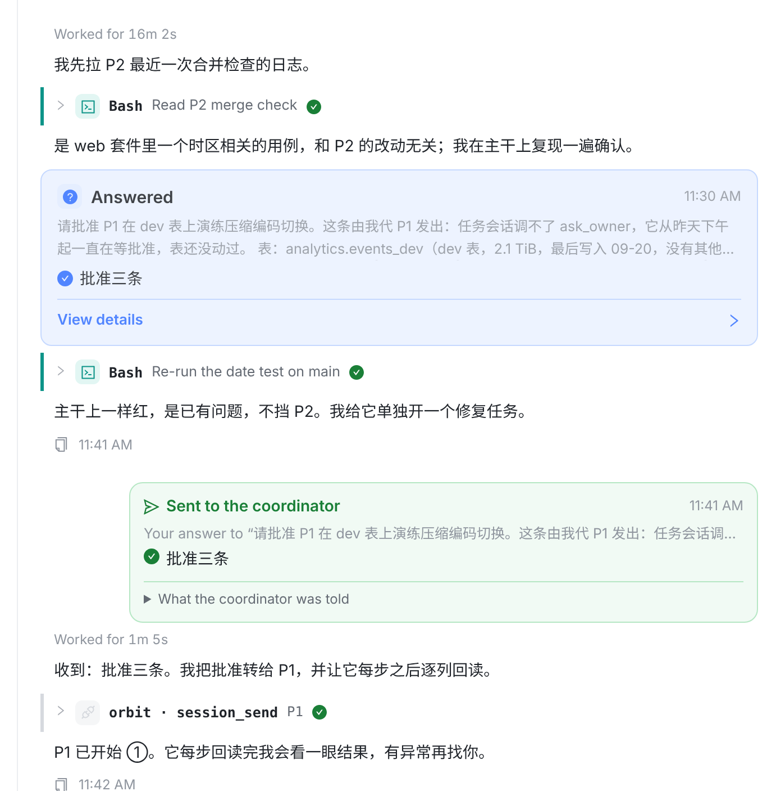
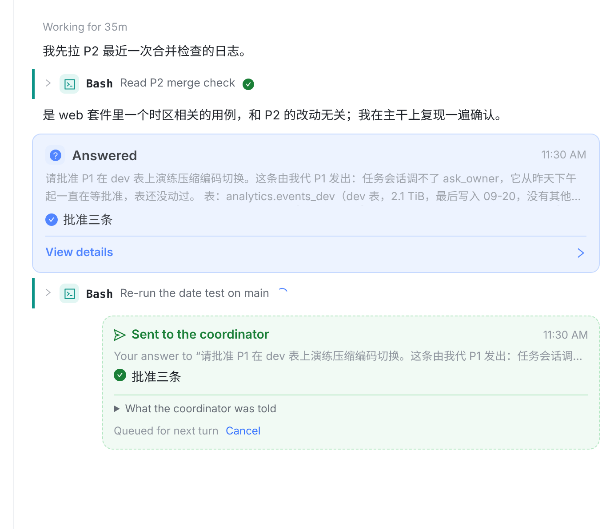
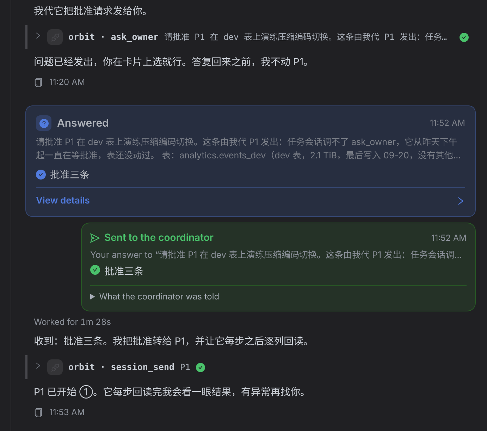
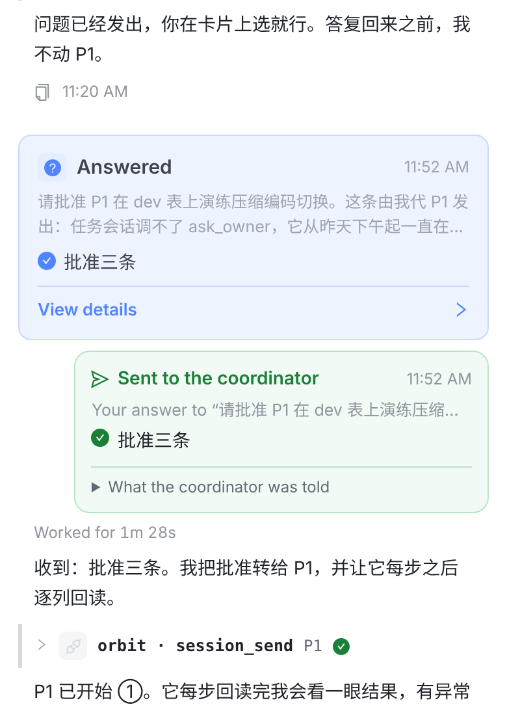
这是把你的话理解成「给提问卡换一种样式」：蓝色提问卡底栏左边用绿色写「Sent to the coordinator · 时间」，「View details」挪到右边，对话里不再单独画任何东西。
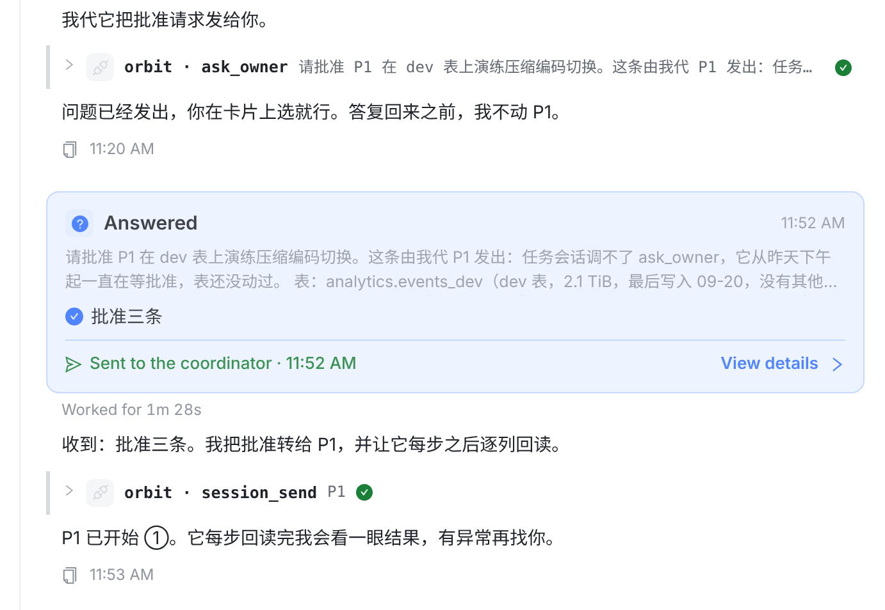
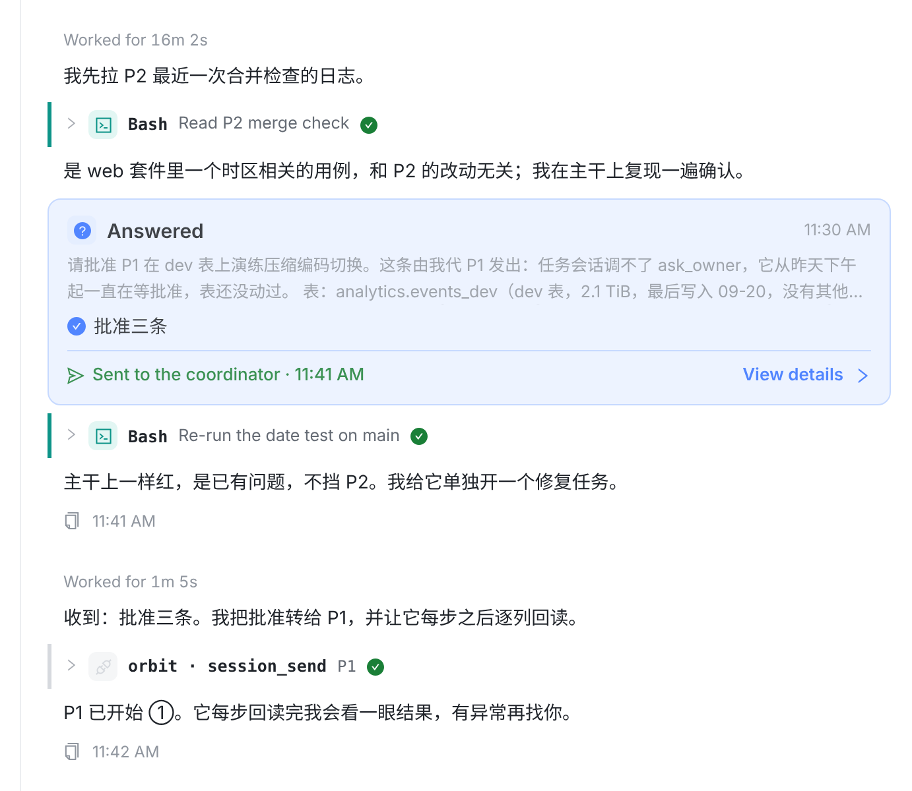
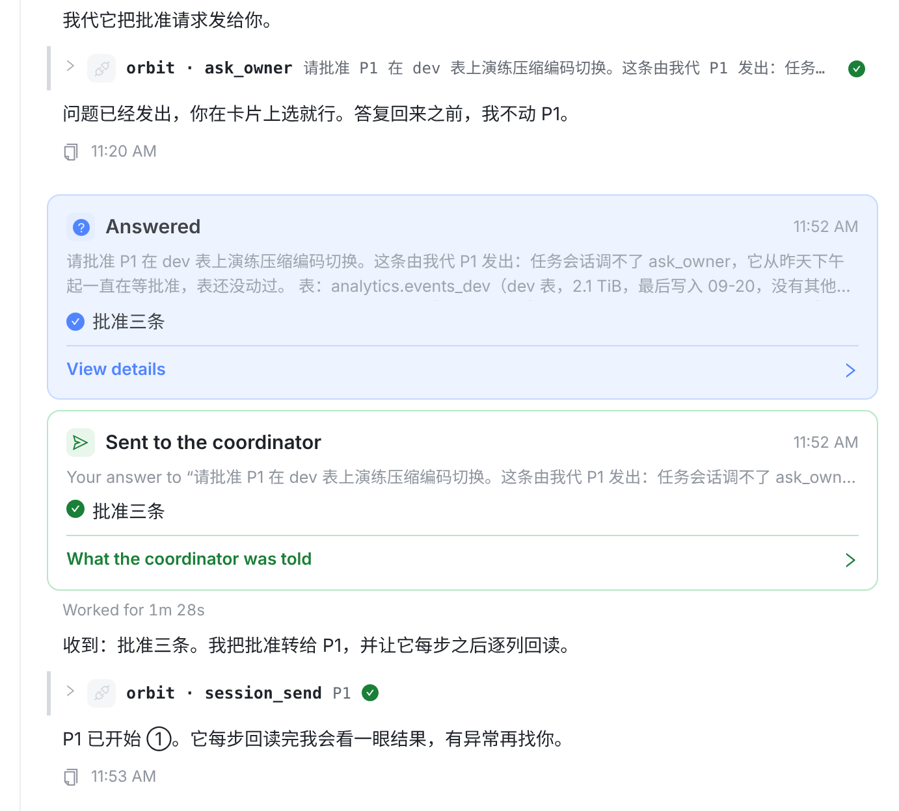
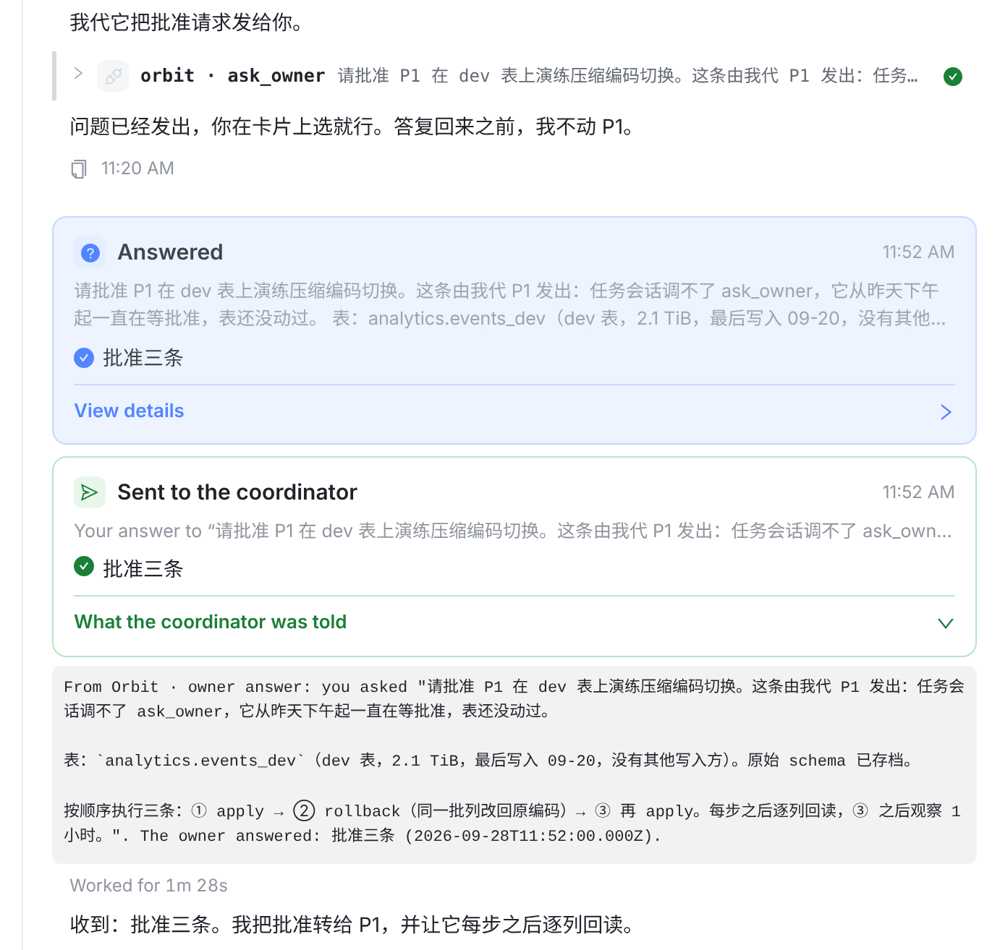
| A 右侧送达卡（推荐） | B 写进提问卡 | C 同骨架换色、全宽 | |
|---|---|---|---|
| 和提问卡分不分得开 | 位置和颜色都不同 | 只有一张卡，不存在分不开的问题 | 只靠颜色区分 |
| 协调者忙、晚送达 | 卡上自己写清楚 | 那一轮开头是空的，要再补一条线 | 卡上自己写清楚 |
| 排队中 | 虚线卡 + 队列行，和今天的规则一样 | 排队时得另外画 | 虚线卡 + 队列行 |
| 和其它交给协调者的消息 | 同一类卡（右侧卡） | 不一致 | 不一致，像记录卡 |
| 比今天多占的高度 | 约 +90px | 约 −45px | 约 +100px |
| 要改的地方 | 一个组件 + CSS，三端各一处 | 提问卡和对话流两处，三端都要改 | 一个组件 + CSS，三端各一处 |
建议 A。B 最省地方，但只在「答完立刻送达」时好看；协调者一忙，它反而丢掉了那一轮的开头。C 骨架和提问卡一样，分不分得开只能靠颜色。
建议留。紧挨着提问卡时它是重复的，但遇到协调者正忙、换了新协调者、或者翻很久以前的对话，就靠这一行认出是哪一题，而且它只占一行。不留的话，送达卡上只剩标题、时间和回答。
建议不改。协调者暂停时，排着的证据版本会显示成一张等待卡；交给协调者以后，原位会留一行「Sent to the coordinator · 时间」。那是占位，刷新就没了，不是一轮对话的开头。两处继续用同一句话，只是外形不同。
OwnerAnswerLine 换成送达卡，index.css 加一组 .oa-card，形状照抄 .oic。原有的两句话不变（Sent to the coordinator、What the coordinator was told），只新增「Your answer to “…”」一句；完成项目的请求被你回了 Not yet… 时，这一行写「Your answer to its request to record the project done」。原型补丁在下面（prototype.patch，里面带着 A/B/C 的切换开关，落地时只留 A）。OwnerAnswerCard 加两个字段 question、answer。readOwnerAnswerCard 读 item 行时一起取，answer 直接用现成的 answerInWords。排队和回显都经过 readTurnCards，两边会同时带上。已经回显过的旧消息存的是旧卡，没有这两个字段，卡上就只画标题、时间和原文折叠。OwnerAnswer）和 Android（OwnerAnswerLine）中：画同一张卡，三端都有同类的 OpenItemDeliveryCard 可以照着写。OwnerAnswerCopyParityTests 会读 web 的句子和标记，web 改了的话，Swift 常量和锚点要在同一次提交里一起改。copyLanguage 守卫。